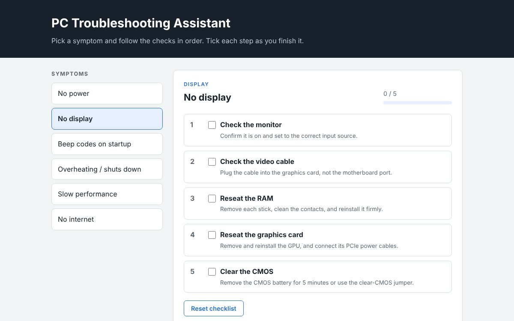
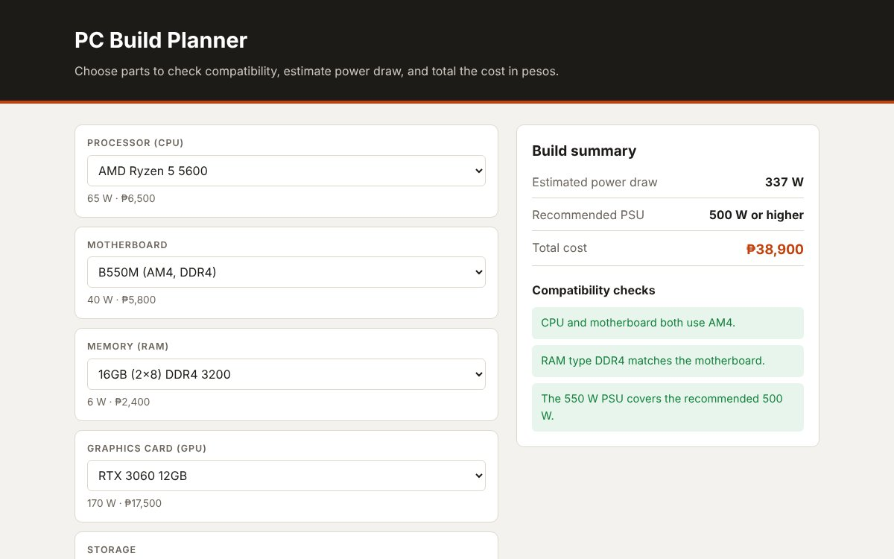

OJT / Internship Portfolio
Albert Christian M. Martin
IT Support Intern
Computer Technology student with hands-on hardware skills, ready to support IT infrastructure and technical operations for a partner company.
Training hours to render
500 hours
0 of 500 rendered
Availability
Starting 2nd Semester A.Y. 2026–2027
About me
Profile and academic background
I'm a Computer Technology student at the College of Industrial Technology, Bulacan State University, driven to apply my foundation in IT infrastructure, technical support, and systems administration in a professional setting. I work carefully, follow through on tasks, and learn quickly on the job. I'm ready to help a partner company's IT team with hardware servicing, user support, and day-to-day technical work.
Core competencies
- PC assembly, troubleshooting, and hardware servicing
- UI/UX wireframing for planning screens and user flows
- Basic programming in Python and C++
- AI-assisted prototyping with manual review of the output
- Degree
- Bachelor of Industrial Technology
- Major
- Computer Technology
- Institution
- Bulacan State University – College of Industrial Technology
- Years
- 2023 – 2027
- Expected graduation
- 2027
- Senior high school
- Assembly Woman Felicita G. Bernardino Memorial Trade School
Skills
Technical skills
Programming
Tools and platforms
Design and digital media
Industrial and technical foundations
Projects
Featured projects

PC Troubleshooting Assistant
Role: Developer (Independent Project)
An interactive checklist that guides a technician through common PC problems such as no power, no display, overheating, and no internet. Each symptom lists checks from simplest to most involved, with a progress bar that tracks completed steps.

PC Build Planner
Role: Developer (Independent Project)
A tool for planning a desktop build. It checks CPU socket and RAM type compatibility, estimates total power draw, recommends a PSU size, and totals the cost in pesos as you choose parts.
Contact
Interested in bringing me onto your team for OJT? Let's connect.
I'm looking for an OJT placement in IT support or technical services. Send me a message and I'll reply with my CV and availability.
Email me- Mobile
- 0966 530 1868
- GitHub
- github.com/albert69to10
- Address
- Malhacan, Meycauayan, Bulacan
- Preferred setup
- Bulacan / Metro Manila